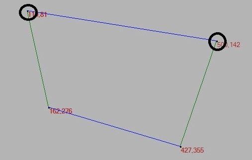
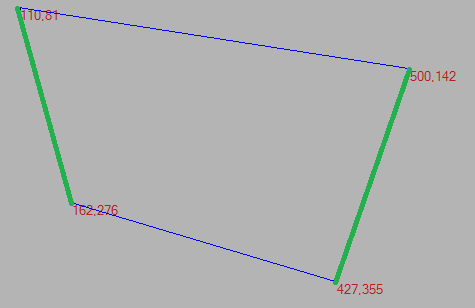

題目
Voronoi diagram (divide-and-conquer)
系級
資汛工程學系碩士班一年級
姓名
鄧子奇
學號
M063040065
軟體規格
功能規格與介面規格

圖(1)

圖(2)

圖(3)
- A、畫布：顯示結果、滑鼠點擊輸入的地方。
未讀入任何檔案且未按下Start、Step By Step 時
，可以以
滑鼠左鍵
點擊畫布輸入資料；
按下 Start或者Step By Step 後，畫布禁止再點擊
。
若選擇讀檔，則時畫布禁止輸入。
圖(1)
-
綠色線條：表示左右的Convex Hull。
-
藍色線條：表示 Convex Hull 的上下公切線。
圖(2)
-
橘色選擇的切線
-
紫色左右兩邊圖形的中垂線
-
黃色：表示HyperPlane的圖形。
圖(3)
-
黃色：處理完畢後以黃色顯示結果。
- B、Run 按鈕：開始執行至所有點皆處理完畢。
當
讀取測試資料檔或
畫布上至少有一筆資料時，可以點擊 Run 執行並顯示結果。
若資料是
以讀取測試資料檔的方式輸入時，則
必須先按Next鍵，讀取每筆測資。
若先以Step by Step 執行，可在任一階段執行 Run 功能。
- C、Step By Step 按鈕：顯示每次Merge前、Merge後的狀況及合併後的 Convex Hull。
當
讀取測試資料檔
或
畫布上至少有一筆資料
時，點擊 Step By Step 可以看到每次 Merge 前後的狀況。
第一次按下暫停在找出左右邊的圖形，第二次按下則暫停找出上下切線， 第三次則是找出左有兩圖形Merge的HyperPlane圖形，第四次則是以黃色現在畫布顯示最後圖形。
若資料是
以讀檔方式輸入，必須先按下Next按鍵
，把點先畫於畫布上，才可以按下 Step By Step。
- D、Next 按鈕：當資料以
讀檔方式輸入( Open File 按鍵)時，Next 按鈕會以阿拉伯數字 顯示讀入的測資個數。當按鈕顯示為0時，會跳出訊息視窗提醒
已無資料。
按下確定後，Next 按鈕會消失。
- E、Clean 按鈕：可在任一時間點清除畫布上的內容。
- F、Open Output File 按鈕：可以
開啟 Output File的檔案格式，並顯示於畫布。
(註) : 目前無做防呆判斷，若開啟格式不支援，軟體會崩潰。
- G、Open File 按鈕：讀取
測試資料檔。
註：以此方式輸入資料時，必須先
按 Next 按鍵
將點顯示於畫布，才可以請點擊 Start 或 Step By Step。
每筆測資結束後，可再按 Next 顯示下一筆資料。執行過程中，可隨時切換測資。
- H、Output File 按鈕：讀取
當畫布上的資料只以黃色線呈現時，代表此測資完成，此時可點擊 Output File，將會跳出提醒視窗，顯示
完成輸出txt
，檔名預設為
OutputFile。
(註) : 檔案會複寫，若要存存每筆測資的結果，需另外存檔。
- I、座標顯示欄 : 鼠標在畫布內移動，會將座標值顯示於此。
軟體說明
解壓縮 M063040065_voronoi.zip 後以滑鼠左鍵雙擊 Voronoi.exe 即可使用。
程式設計
到demo期限仍然只能完整執行4個點的圖形，大致上演算法都與課本描述的相同，除在取上下切線的地方以網路方法為主，並未達到實作時間為O(n)要求之外。為方便運算和儲存資料，另外設計點與線的資料結構，程式主要都在線的運算，所以特別在線的資料結構中，設計可以取得該邊相對上、下、左、右，以方便算法的實現與正確。
（註:點與線的結構非C#提供，當時並不知C#有類似的資料結構，到後期查詢資料才得知有原生型態可使用。）
以下算法主要以實作四個點為主：
- 第一步，分割：在取得點資料後，會將點先以X的值由小到大依序排列，接者將點依數量對半分為左右兩部分並劃出圖形。
- 第二步，合併，取得上下切線：此實作方法是以網路範例去修改，主要以Monotone Chain的方式去找出整個圖形的convex hull，所以為只得到切線部分，只需將得到完整convex hull 的線段移除原本左右兩側原本存在的線段即可得到上下切線。
- 第三步，產生HyperPlane：此階段全依講義上方式實作。
- 3-1:初始所有會要用到的邊與點 3-1-1:設定SG線段，SG的兩點分別為左、右圖線段相對左與相對右的點，如圖(4)黑圈。

圖(4)
3-1-2:取得hyperplan：實現hyperplan的方式為儲存點並依序畫出，所以初始時必須先將設定第一個點於hyperplan的點陣列，第一個點必定是上切線的中垂線相對上點，由於實作以過中點加上方向向量乘上10000倍得到一個在圖形外的一點，無法畫出具體位置。
3-1-3:為實作的需求，須多一個紀錄更換點的變數，用於紀錄更新SG線段時原本的SG中哪一點被替換，主要是換點時，判斷不再次找到該點作為替換點，如圖(5)的黃圈，介於兩黑圈的紅線代表更新的SG，
黃圈代表上條SG的被更換的點。

圖(5)
- 3-2:進入迴圈，判斷SG是否已更新至下切線，若成立跳出停止，否則將執行下列，接下來要取得左圖形與SG左點相連的邊，同理右邊，如圖(6)兩側綠線所示。

圖(6)
- 3-3:分別對計算左、右邊綠線的中垂線與SG的中垂線的交點，圖(7)紅點為左綠線中垂與SG交點，綠點為右綠線中垂與SG交點。

圖(7)
- 3-4:交點的選擇依據則以點集合中Y點最小得點為選擇如圖(8)紅點，此使由設計的資料結構可以直接得到是由哪一條綠線中垂線的交點，如圖(8)綠線。

圖(8)
- 3-5:更新SG，左邊綠線被選擇到，所以只更新SG左邊的點，如圖(9)，橘色線為原SG，紅線為更新後之SG。

圖(9)
- 3-6:返回3-2判斷。最後可得到圖(10)

圖(10)
- 第四步，消線：
- 4-1:清空畫布
- 4-2:依序畫出hyperplane的點集合，如圖(11)

圖(11)
- 4-3:判斷中垂線消去範圍，判斷方式為hyperplane角度的轉向與中垂線兩側交點的轉向是否相同，相同則代表該線段需消除，如圖(12)
深藍與淺藍方向相同，深藍與紫色方向相反，所以留左邊去右邊。

圖(12)
- 4-4:返回4-3，直到執行到最後一條中垂線
- 4-5:最後可得完整得到4點的Voronoi圖

圖(13)
軟體測試與實驗結果
測試環境
- 硬體配備：
- CPU：Intel Core I7-7700
- 記憶體：DDR4 8G
- 作業系統 : window 10
- IDE : Visual Stido 2017
- 開發語言 : C#
實驗結果
目前程式僅能執行4個點，在第一階段時，以為只需點結構即可以，在多點 測試便陷入資料結構混亂的問題，因此為實作出4點以上的Voroni必須在新增更多資料結構以儲存必須的資料，所以第二階段一開始便花去大量得時間修改程式資料結構、程式結構以及程式操作邏輯等問題，便壓縮了實作核心算法的時間，
目前問題是Hyperplan無法正確找到最先接近的中垂段的交點，所以在merge時便出錯。
結論與心得
這是一份充滿酸甜的作業，透過實作過程，補充了許多數學知識，當然為了以divde-and-conquer更需充分了解算法，解決選擇下一個點與換線方式，但作業有期限加上自身程式觀念不足，在時間上的把握並不好，導致到了demo日期，程式也只能夠執行４個點的圖形。
這份作業真的花了我許多時間，從一開始就聽學長說這份作業不太好寫，可以提早動工，到老師公布作業，學長大概提早提醒我們有１個多月吧，但當時心有餘而力不足，其他課的作業真的很多，等到了只剩下一個禮拜就到第一階段的demo時間，那時不時覺得連呼吸都累，
也因此失去思考和設計voromoi資料結構的時間，草草動工。為什麼clean code可以寫成一本書？其中便是極其重要的告訴讀者(coder)，乾淨明了的程式碼是多麼重要，但自己卻只是為功能而編寫程式碼，也以自己熟悉的Ｃ＃作為作業程式語言。另外本也想為專案寫
一些測試專案作為日後的debug用，不過很失望自己未能達成，一切都是自己懶，當自己完成第一階段的程式後，仍未意識到程式的問題性，缺乏穩定、修改、擴充，這些問題一直到了要交第二次作業時才慢慢浮現，編寫邊問號自己，周邊的旋律總是周杰倫的半島鐵盒的那句
歌詞，怎麼這樣子～程式整體缺少了非常多的必要資訊，例如點應要以何種方式排列，我的線段程式如何知道線段哪一頭為相對上，下，左，右呢？為此我幾乎重新寫了第一次的作業，我修改了全部第一次使用到的資料結構，不過嚴格說第一次算暴力方式去解決問題，
根本不需要資料結構的問題，我想這就是我第二次作業無法順利完成的原因吧，最後希望自己能更擅於安排時間，為思考更多作業的算法與結構。
附錄